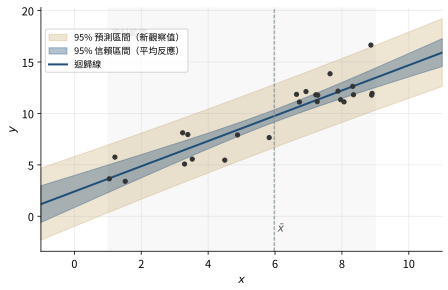
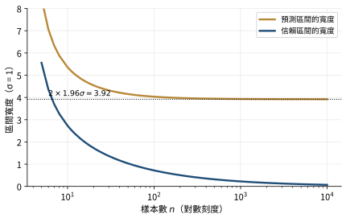
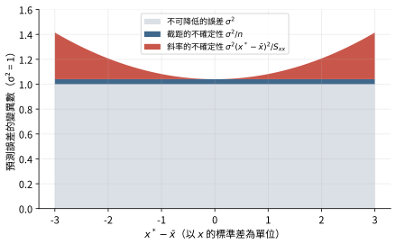
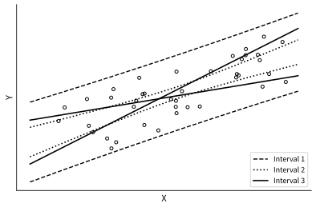

9.1 預測的兩個誤差來源：簡單迴歸 一、點預測
給一個新的解釋變數值 \(x^*\)，點預測 （point prediction）就是把它代進配適好的直線：
\[\hat y^*=b_0+b_1x^* .\]
例如 \(\hat y=10.29-0.29x_1+0.91x_2\)，\(x_1=10\)、\(x_2=5\) 時 \(\hat y^*=10.29-2.9+4.55=11.94\)。
點預測只是一個數字。真正有用的是知道它有多不準 ，這要靠區間。
二、兩種想預測的東西
預測 \(x^*\) 這一點時，其實可能想問兩件不同的事：
平均反應 （mean response）\(E(y^*)=\beta_0+\beta_1x^*\)：例如「所有 45 歲、年收 100 萬的保戶，平均理賠是多少」。一個新的觀察值 \(y^*=\beta_0+\beta_1x^*+\varepsilon^*\)：例如「明天來投保的這位 45 歲、年收 100 萬的保戶，他明年的理賠是多少」。
兩者的點預測一樣，都是 \(\hat y^*\)。但不確定性不一樣，因為誤差來源不一樣：
誤差來源
原因
能不能靠更多資料消掉
(1) 係數估計的誤差
\(b_0,b_1\) 是估計值，換一組資料就不同
可以：\(n\to\infty\) 時趨近 0
(2) 不可降低的誤差
即使知道真正的 \(\beta_0,\beta_1\)，個別的 \(y^*\) 仍然在平均附近隨機散開（\(\varepsilon^*\)）
不行：永遠是 \(\sigma^2\)
估計平均反應 只有誤差 (1)，對應的區間叫信賴區間 （confidence interval）。
預測一個新的觀察值 兩種誤差都有，對應的區間叫預測區間 （prediction interval）。
所以預測區間一定比信賴區間寬。這和第 1 章 的「可降低的誤差＋不可降低的誤差」是同一件事。
三、推導：點預測的變異數
推導：\(\mathrm{Var}(\hat y^*)\)
第一步：把預測值改寫成兩個不相關的部分。 因為 \(b_0=\bar y-b_1\bar x\)，
\[\hat y^*=b_0+b_1x^*=\bar y+b_1(x^*-\bar x).\]
這樣寫的好處是：\(\bar y\) 和 \(b_1\) 不相關（下一步證明），變異數可以直接相加。
第二步：證明 \(\mathrm{Cov}(\bar y,b_1)=0\)。 第 2 章 推過 \(b_1=\sum_ic_iy_i\)，其中 \(c_i=\dfrac{x_i-\bar x}{S_{xx}}\)；\(\bar y=\sum_i\dfrac1ny_i\)。\(y_i\) 彼此獨立、變異數都是 \(\sigma^2\)，所以
\[\mathrm{Cov}(\bar y,b_1)=\sum_i\frac1n\,c_i\,\sigma^2=\frac{\sigma^2}{n\,S_{xx}}\sum_i(x_i-\bar x)=0,\]
因為離差的總和 \(\sum(x_i-\bar x)=0\)。
第三步：相加。 \(\mathrm{Var}(\bar y)=\sigma^2/n\)，\(\mathrm{Var}(b_1)=\sigma^2/S_{xx}\)（第 3 章 ），\(x^*-\bar x\) 是常數：
\[\mathrm{Var}(\hat y^*)=\frac{\sigma^2}{n}+(x^*-\bar x)^2\frac{\sigma^2}{S_{xx}}=\sigma^2\Big(\frac1n+\frac{(x^*-\bar x)^2}{S_{xx}}\Big).\]
這個式子說明了三件事：
在 \(x^*=\bar x\) 最小 ：只剩 \(\sigma^2/n\)。直線一定通過 \((\bar x,\bar y)\)，在中心點上只有「整條線上下平移」的不確定性。離 \(\bar x\) 越遠越大 ：斜率估錯一點點，離中心越遠，誤差被放得越大（像蹺蹺板）。\(S_{xx}\) 越大越小 ：解釋變數本身散得越開，斜率估得越準。
括號裡的 \(\frac1n+\frac{(x^*-\bar x)^2}{S_{xx}}\) 就是第 5 章 的槓桿 （leverage）公式，只是把 \(x_i\) 換成新的點 \(x^*\)：新點的槓桿越大，預測越不穩。
四、推導：預測誤差的變異數
推導：\(\mathrm{Var}(y^*-\hat y^*)\)
將來實際發生的值 \(y^*=\beta_0+\beta_1x^*+\varepsilon^*\)。\(\varepsilon^*\) 是將來才發生的誤差，和用來估計係數的訓練資料獨立 ，所以和 \(\hat y^*\) 獨立：
\[\mathrm{Var}(y^*-\hat y^*)=\mathrm{Var}(\varepsilon^*)+\mathrm{Var}(\hat y^*)=\sigma^2\Big(1+\frac1n+\frac{(x^*-\bar x)^2}{S_{xx}}\Big).\]
比 \(\mathrm{Var}(\hat y^*)\) 多了一個 \(\sigma^2\)，也就是括號裡多了一個 1。
五、兩個區間的公式
\(\sigma^2\) 不知道，用 \(s^2=\mathrm{Error\ SS}/(n-2)\) 代替，標準化後的量服從自由度 \(n-2\) 的 \(t\) 分配（和第 3 章 係數的 \(t\) 檢定同一個道理）。\(100(1-\alpha)\%\) 的區間：
\[\text{平均反應的信賴區間：}\quad \hat y^*\pm t_{n-2,\,1-\alpha/2}\;s\sqrt{\frac1n+\frac{(x^*-\bar x)^2}{S_{xx}}}\]
\[\text{新觀察值的預測區間：}\quad \hat y^*\pm t_{n-2,\,1-\alpha/2}\;s\sqrt{1+\frac1n+\frac{(x^*-\bar x)^2}{S_{xx}}}\]

25 筆模擬資料的迴歸線、95% 信賴區間（深色帶）與 95% 預測區間（淺色帶）。兩條帶子都在 \(\bar x\)（虛線）最窄、往兩端呈雙曲線張開。信賴區間只包住「平均的位置」，大部分資料點落在它外面；預測區間包住個別觀察值，25 個點中有 24 個在裡面（期望約 95%）。 六、隨樣本數怎麼變
\(n\) 增加時，\(\frac1n\to0\)；\(S_{xx}=(n-1)s_x^2\) 也跟著變大（\(s_x^2\) 是解釋變數的樣本變異數，大致固定），所以 \(\frac{(x^*-\bar x)^2}{S_{xx}}\to0\)。結果：
信賴區間的寬度 \(\to0\)：資料無限多時，平均反應可以估得完全準。
預測區間的寬度 \(\to2\times1.96\,\sigma\)（95% 時）：個別觀察值的隨機性永遠存在。

固定 \(x^*\) 在 \(\bar x+1.5s_x\)、\(\sigma=1\)，95% 區間的寬度隨樣本數 \(n\) 的變化（橫軸對數刻度）。信賴區間的寬度從 \(n=5\) 的 5.56 一路降到 \(n=10{,}000\) 的 0.07；預測區間從 8.45 降到 3.92，停在 \(2\times1.96\sigma=3.92\)，再多資料也縮不下去。 
預測誤差變異數的三個組成（\(n=25\)、\(\sigma^2=1\)、\(x\) 的樣本標準差 1）。灰色的 \(\sigma^2=1\) 不隨 \(x^*\) 改變，而且佔了大部分；藍色的 \(\sigma^2/n=0.04\) 是截距的不確定性；紅色的 \(\sigma^2(x^*-\bar x)^2/S_{xx}\) 是斜率的不確定性，離 \(\bar x\) 越遠越大，在 \(\bar x\pm3s_x\) 時達到 0.375。
例題 9-1：簡單迴歸的預測區間（習題 9.3）
25 筆觀察，\(\bar x=223\)、\(\bar y=1160\)，\(b_0=47.26\)、\(b_1=5.00\)，Regression SS \(=23{,}958{,}920\)、Error SS \(=5{,}245\)。求 \(x=100\) 時 \(y\) 的 95% 預測區間上界。
第一步：點預測。 \(\hat y^*=47.26+5(100)=547.26\)。
第二步：殘差標準誤。 \(s=\sqrt{5245/(25-2)}=\sqrt{228.04}=15.101\)。
第三步：還原 \(S_{xx}\)。 題目沒有直接給 \(S_{xx}\)，但簡單迴歸的 Regression SS \(=b_1^2S_{xx}\)（第 3 章 ），所以
\[S_{xx}=\frac{23{,}958{,}920}{5^2}=958{,}356.8 .\]
第四步：預測的標準差。
\[s\sqrt{1+\frac1{25}+\frac{(100-223)^2}{958{,}356.8}}=15.101\sqrt{1+0.04+0.01579}=15.101\times1.02752=15.517 .\]
第五步：區間。 自由度 \(25-2=23\)，\(t_{23,\,0.975}=2.069\)。上界 \(547.26+2.069\times15.517=579.4\)。
例題 9-2：從樣本標準差還原 \(S_{xx}\)（習題 9.7 的關鍵一步）
摘要統計表常給「解釋變數的樣本標準差」\(s_x\)，而不是 \(S_{xx}\)。因為 \(s_x^2=\dfrac{S_{xx}}{n-1}\)，
\[S_{xx}=(n-1)s_x^2 .\]
例如 \(n=30\)、\(s_x=13.3147572\)：\(S_{xx}=29\times13.3147572^2=5141.2\)。表裡的 MSE 就是 \(s^2\)。
易錯提醒
預測區間的根號裡有 1 ，信賴區間沒有。考題問「預測區間」時忘了 1，答案會小很多。
自由度是 \(n-2\)（簡單迴歸）或 \(n-k-1\)（多元迴歸），不是 \(n-1\)。
題目給「預測的變異數」時，通常指的是 \(s^2(1+\cdots)\) 這個預測誤差的變異數；給「配適值的變異數」或「平均反應的變異數」才是沒有 1 的那個。看清楚題目用的詞，必要時兩個都算出來比對選項。
考試怎麼考：信賴區間與預測區間
SOA 樣題第 13 題型 ：\(\varepsilon=0\)（沒有不可降低的誤差）時兩個區間相同；預測區間永遠至少一樣寬；「\(E(y\mid x)\) 的可能範圍」是信賴區間 ，不是預測區間。SOA 樣題第 49 題型 ：\(n\to\infty\) 時信賴區間寬度 \(\to0\)，預測區間不會。SOA 樣題第 56 題型 ：不同模型的預測通常不同；預測時假設新觀察值和樣本服從同一個模型；區間預測比點預測更有資訊；區間越窄越有資訊；預測區間當然包含點預測。圖形題 ：三組曲線中最寬的是預測區間，包住大部分資料點的那組；窄的、在 \(\bar x\) 附近幾乎貼著迴歸線的是信賴區間。兩者都是向外張開的曲線，不是平行直線，也不會互相交叉。計算題 ：最常見的變形是只給 Regression SS 或 \(s_x\)，要先還原 \(S_{xx}\)。
這一節的精選習題
For the linear model \(y_i=\beta_0+\beta_1x_i+\varepsilon_i\) based on 25 observations, you are given:
(i) \(\bar x=223\)
(ii) \(\bar y=1160\)
(iii) The fitted values of the parameters are \(b_0=47.26\), \(b_1=5.00\).
(iv)
Source
Sum of Squares
Regression
23,958,920
Error
5,245
Calculate the upper bound of a 95% prediction interval for \(y\) when \(x=100\).
隱藏解答 中文題意
線性模型 \(y_i=\beta_0+\beta_1x_i+\varepsilon_i\)，以 25 筆觀察配適：
(i) \(\bar x=223\)
(ii) \(\bar y=1160\)
(iii) 係數估計值 \(b_0=47.26\)、\(b_1=5.00\)
(iv) 平方和：
求 \(x=100\) 時 \(y\) 的 95% 預測區間上界。
（數據、圖表與選項見上方英文題目。）
解析
點預測 ：\(47.26+5(100)=547.26\)。
殘差標準誤 ：\(s=\sqrt{5245/23}=15.101\)。
還原 \(S_{xx}\) ：簡單迴歸的 Regression SS \(=b_1^2S_{xx}\)，所以 \(S_{xx}=23{,}958{,}920/25=958{,}356.8\)。
預測的標準差 ：
\[15.101\sqrt{1+\frac1{25}+\frac{(100-223)^2}{958{,}356.8}}=15.101\sqrt{1.055786}=15.517 .\]
區間 ：\(t_{23,\,0.975}=2.069\)，上界 \(547.26+2.069(15.517)=579.4\)。
易錯提醒
Regression SS 除以的是 \(b_1^2=25\)，不是 \(b_1=5\)。這裡 \(x=100\) 離 \(\bar x=223\) 很遠，但因為 \(S_{xx}\) 非常大，那一項只有 0.016，區間主要由根號裡的 1 決定。
For the linear model \(y_i=\beta_0+\beta_1x_i+\varepsilon_i\) based on 10 observations, you are given:
(i) \(\bar x=7.1\)
(ii) The standard error of the regression is 3.7981.
(iii) The variance of the prediction for \(y\) when \(x=3\) is 17.3568.
Calculate the unbiased sample variance of \(\mathbf x\).
隱藏解答 中文題意
線性模型 \(y_i=\beta_0+\beta_1x_i+\varepsilon_i\)，以 10 筆觀察配適：
(i) \(\bar x=7.1\)
(ii) 迴歸的標準誤為 3.7981。
(iii) \(x=3\) 時 \(y\) 的預測變異數為 17.3568。
求 \(x\) 的不偏樣本變異數。
解析
預測變異數 \(s^2\Big(1+\dfrac1n+\dfrac{(x^*-\bar x)^2}{S_{xx}}\Big)\)，倒著解出 \(S_{xx}\)：
\[3.7981^2\Big(1+\frac1{10}+\frac{(3-7.1)^2}{S_{xx}}\Big)=17.3568 .\]
\(3.7981^2=14.4256\)，兩邊除以它：\(1.1+\dfrac{16.81}{S_{xx}}=1.2032\)，所以 \(\dfrac{16.81}{S_{xx}}=0.1032\)，\(S_{xx}=162.89\)。
不偏樣本變異數 \(=S_{xx}/(n-1)=162.89/9=18.10\)。
易錯提醒
「不偏」樣本變異數分母是 \(n-1=9\)；除以 10 得 16.29 是錯的。
[SRM Sample Question #13] Determine which of the following statements is/are true for a simple linear relationship, \(y=\beta_0+\beta_1x+\varepsilon\).
I. If \(\varepsilon=0\), the 95% confidence interval is equal to the 95% prediction interval.
II. The prediction interval is always at least as wide as the confidence interval.
III. The prediction interval quantifies the possible range for \(E[y\mid x]\).
(A) I only
(B) II only
(C) III only
(D) I, II, and III
(E) The correct answer is not given by (A), (B), (C), or (D).
隱藏解答 中文題意
（SRM 樣題第 13 題）對簡單線性關係 \(y=\beta_0+\beta_1x+\varepsilon\)，下列哪些正確？
I. 若 \(\varepsilon=0\)，95% 信賴區間等於 95% 預測區間。
II. 預測區間至少和信賴區間一樣寬。
III. 預測區間量化的是 \(E(y\mid x)\) 的可能範圍。
(A) 只有 I (B) 只有 II (C) 只有 III (D) I、II、III (E) 以上皆非
解析
I 對：預測區間比信賴區間多的就是誤差項的變異數，\(\varepsilon=0\) 時這一項消失，兩者相同。
II 對：預測區間多了不可降低的誤差，所以一定至少一樣寬。
III 錯：\(E(y\mid x)\) 是平均反應，對應的是信賴區間 ；預測區間是個別 \(y\) 的範圍。
只有 I、II，不在 (A)～(D) 中，答案 (E)。
[S-S17:36] You are given the following information for a model fitted using ordinary least squares (OLS):
Item
Value
Response variable
Rating
MSE
6.993
Parameter
df
\(\hat\beta\)
standard error
Intercept
1
14.37632
6.61999
Complaints
1
0.75461
0.09753
Summary Statistic
Rating
Complaints
\(n\)
30
30
Min
40
37
Max
85
90
Sum
1939
1998
Median
65.5
65.0
Sample Std. Dev.
12.1725619
13.3147572
Calculate the upper bound of the 95% prediction interval for Rating, for an observation with a Complaints value of 50.
(A) Less than 50
(B) At least 50, but less than 60
(C) At least 60, but less than 70
(D) At least 70, but less than 80
(E) At least 80
隱藏解答 中文題意
（2017 春季 S 第 36 題）以普通最小平方配適的模型資訊如下：
求 Complaints 為 50 的觀察值，其 Rating 的 95% 預測區間上界。
（數據、圖表與選項見上方英文題目。）
解析
點預測 ：\(14.37632+0.75461(50)=52.107\)。
需要的量 ：\(s^2=\mathrm{MSE}=6.993\)；\(\bar x=1998/30=66.6\)；\(S_{xx}=(n-1)s_x^2=29(13.3147572)^2=5141.2\)。
預測的標準差 ：
\[\sqrt{6.993\Big(1+\frac1{30}+\frac{(50-66.6)^2}{5141.2}\Big)}=\sqrt{6.993(1.08693)}=2.757 .\]
區間 ：自由度 28，\(t=2.048\)，上界 \(52.107+2.048(2.757)=57.75\)。
易錯提醒
表裡很多數字用不到（Rating 的標準差、中位數、最大最小值、係數的標準誤）。要的是 MSE、Complaints 的平均與樣本標準差。
[SRM Sample Question #49] Trish runs a regression on a data set of \(n\) observations. She then calculates a 95% confidence interval \((t,u)\) on \(y\) for a given set of predictors. She also calculates a 95% prediction interval \((v,w)\) for the same set of predictors.
Determine which of the following must be true.
I. \(\lim_{n\to\infty}(u-t)=0\)
II. \(\lim_{n\to\infty}(w-v)=0\)
III. \(w-v>u-t\)
(A) None
(B) I and II only
(C) I and III only
(D) II and III only
(E) The correct answer is not given by (A), (B), (C), or (D).
隱藏解答 中文題意
（SRM 樣題第 49 題）Trish 對 \(n\) 筆觀察的資料做迴歸，對一組給定的解釋變數算出 \(y\) 的 95% 信賴區間 \((t,u)\)，也算出同一組解釋變數的 95% 預測區間 \((v,w)\)。下列哪些一定成立？
I. \(\lim_{n\to\infty}(u-t)=0\)
II. \(\lim_{n\to\infty}(w-v)=0\)
III. \(w-v>u-t\)
(A) 都不成立 (B) 只有 I、II (C) 只有 I、III (D) 只有 II、III (E) 以上皆非
解析
I 對：信賴區間只反映係數的估計誤差。簡單迴歸時根號裡是 \(\frac1n+\frac{(x^*-\bar x)^2}{S_{xx}}\)，\(n\to\infty\) 時 \(\frac1n\to0\)，\(S_{xx}=(n-1)s_x^2\to\infty\)，所以寬度趨近 0。
II 錯：預測區間還有 \(\sigma^2\)，寬度趨近 \(2\times1.96\sigma\)，不會到 0。
III 對：預測區間多了 \(\sigma^2\)，一定比較寬（只要 \(\sigma^2>0\)）。
[MAS-I-S19:36] An ordinary least squares regression model is fit with the following model form:
\[E[Y_i]=\beta_0+\beta_1X_i\]
After fitting the model, the following plot with the original data (points) and three sets of 95% intervals are provided:

依題目原圖重畫的示意圖。Interval 1（虛線）最寬，包住幾乎所有資料點，往兩端略為張開；Interval 2（點線）很窄，緊貼著迴歸線，在中間最窄、往兩端張開；Interval 3（實線）是兩條斜率不同的直線，在圖的左側相交附近、往右分開。 Let "CI" be the 95% confidence interval for \(E[Y_i]\), and let "PI" be the 95% prediction interval for \(Y_i\).
Determine which of the following best describes the intervals shown above.
(A) Interval 1 = CI, Interval 2 = PI
(B) Interval 1 = PI, Interval 2 = CI
(C) Interval 1 = CI, Interval 3 = PI
(D) Interval 1 = PI, Interval 3 = CI
(E) None of (A), (B), (C), or (D) are correct
隱藏解答 中文題意
（MAS-I 2019 春季第 36 題）以普通最小平方配適 \(E(Y_i)=\beta_0+\beta_1X_i\)。配適後畫出原始資料（圓點）與三組 95% 區間：
令「CI」為 \(E(Y_i)\) 的 95% 信賴區間，「PI」為 \(Y_i\) 的 95% 預測區間。哪一個選項最能描述圖中的區間？
(A) Interval 1＝CI，Interval 2＝PI
(B) Interval 1＝PI，Interval 2＝CI
(C) Interval 1＝CI，Interval 3＝PI
(D) Interval 1＝PI，Interval 3＝CI
(E) 以上皆非
（數據、圖表與選項見上方英文題目。）
解析
預測區間包含個別觀察值的變異，一定比信賴區間寬，而且應該包住大約 95% 的資料點：Interval 1 是 PI。信賴區間只包住平均的位置，緊貼著迴歸線、在 \(\bar x\) 最窄：Interval 2 是 CI。
Interval 3 是兩條直線，不是以迴歸線為中心、往兩端張開的曲線，兩者都不是。
觀念題（15 題，仿 SOA 樣題的觀念判斷與小計算，含跨章節）
觀念 觀念題 C9.1-1 仿 SOA 樣題・跨章：第 1 章・回到本節開頭 Determine which of the following statements about predictions from a linear regression is/are true.
I. The confidence interval for the mean response accounts only for the uncertainty in the estimated coefficients.
II. The prediction interval for a new observation accounts for both the uncertainty in the estimated coefficients and the irreducible error.
III. For a given \(x^*\), the point prediction of a new observation differs from the point estimate of the mean response.
(A) I and II only
(B) I and III only
(C) II and III only
(D) I, II, and III
(E) The correct answer is not given by (A), (B), (C), or (D).
隱藏解答 中文題意
下列哪些正確？
I. 平均反應的信賴區間只考慮係數的估計誤差。
II. 新觀察值的預測區間同時考慮係數的估計誤差與不可降低的誤差。
III. 同一個 \(x^*\)，新觀察值的點預測和平均反應的點估計不同。
解析
I、II 對：這就是兩個區間的差別（9.1 節 第二小段的表）。
III 錯：兩者的點預測都是 \(\hat y^*=b_0+b_1x^*\)，只有區間寬度不同。
A simple linear regression is fitted to 12 observations with \(b_0=3\), \(b_1=1.5\), \(s=2\), \(\bar x=5\), and \(\sum(x_i-\bar x)^2=40\).
Calculate the upper bound of the 95% prediction interval for \(y\) at \(x^*=9\).
(A) 19.23
(B) 19.60
(C) 21.27
(D) 21.93
(E) 22.48
隱藏解答 中文題意
12 筆觀察的簡單迴歸：\(b_0=3\)、\(b_1=1.5\)、\(s=2\)、\(\bar x=5\)、\(S_{xx}=40\)。求 \(x^*=9\) 時 \(y\) 的 95% 預測區間上界。
解析
點預測 ：\(3+1.5(9)=16.5\)。
標準差 ：\(2\sqrt{1+\frac1{12}+\frac{(9-5)^2}{40}}=2\sqrt{1+0.0833+0.4}=2\sqrt{1.4833}=2.4358\)。
區間 ：自由度 \(12-2=10\)，\(t=2.228\)，上界 \(16.5+2.228(2.4358)=21.93\)。
(B) 19.60 是信賴區間 的上界（根號裡少了 1）；(C) 21.27 是用 \(z=1.96\) 代替 \(t_{10}\)；(A) 19.23 兩個錯誤都犯了。
易錯提醒
預測區間根號裡有 1；自由度是 \(n-2=10\)。
A simple linear regression is fitted to 20 observations, and \(s^2=9\).
Calculate the estimated variance of the prediction error \(y^*-\hat y^*\) at \(x^*=\bar x\).
(A) 0.45
(B) 3.00
(C) 9.00
(D) 9.45
(E) 9.47
隱藏解答 中文題意
20 筆觀察的簡單迴歸，\(s^2=9\)。求在 \(x^*=\bar x\) 時預測誤差 \(y^*-\hat y^*\) 的估計變異數。
解析
\(x^*=\bar x\) 時 \((x^*-\bar x)^2/S_{xx}=0\)，預測誤差的變異數 \(s^2(1+\frac1n)=9(1+0.05)=9.45\)。
(A) 0.45 是平均反應的變異數 \(s^2/n\)；(C) 9.00 是忘了 \(\frac1n\)。
A simple linear regression is fitted to 16 observations with \(s^2=12\) and \(\bar x=4\). The estimated variance of the prediction error at \(x^*=10\) is 15.75.
Calculate \(\sum(x_i-\bar x)^2\).
(A) 36
(B) 96
(C) 144
(D) 192
(E) 576
隱藏解答 中文題意
16 筆觀察，\(s^2=12\)、\(\bar x=4\)，\(x^*=10\) 時預測誤差的變異數是 15.75。求 \(S_{xx}\)。
解析
\(12\Big(1+\frac1{16}+\frac{36}{S_{xx}}\Big)=15.75\Rightarrow1.0625+\frac{36}{S_{xx}}=1.3125\Rightarrow\frac{36}{S_{xx}}=0.25\Rightarrow S_{xx}=144\)。
(B) 96 是漏了 \(\frac1n\)（\(36/0.375\)）。
In a simple linear regression based on 21 observations, the sample standard deviation of \(x\) (with divisor \(n-1\)) is 3 and \(s^2=4\).
Calculate the estimated variance of the prediction error at a point \(x^*\) that is 6 units above \(\bar x\).
(A) 4.19
(B) 4.80
(C) 4.99
(D) 5.80
(E) 6.59
隱藏解答 中文題意
21 筆觀察，\(x\) 的樣本標準差（分母 \(n-1\)）是 3，\(s^2=4\)。求比 \(\bar x\) 大 6 的點上，預測誤差的估計變異數。
解析
還原 \(S_{xx}\) ：\(S_{xx}=(n-1)s_x^2=20\times9=180\)。
變異數 ：\(4\Big(1+\frac1{21}+\frac{36}{180}\Big)=4(1.2476)=4.99\)。
(B) 4.80 是忘了 \(\frac1{21}\)；(A) 4.19 是漏了 \((x^*-\bar x)^2/S_{xx}\) 那一項；(E) 6.59 是忘了把標準差平方（\(S_{xx}=20\times3=60\)）。
易錯提醒
\(S_{xx}=(n-1)s_x^2\)，標準差要平方、再乘 \(n-1\)。
Determine which of the following statements is/are true for a simple linear regression.
I. The confidence interval for the mean response is narrowest at \(x^*=\bar x\).
II. The prediction interval has the same width for every value of \(x^*\).
III. Increasing the spread of the observed \(x\) values, other things equal, narrows the confidence interval for the mean response.
(A) I and II only
(B) I and III only
(C) II and III only
(D) I, II, and III
(E) The correct answer is not given by (A), (B), (C), or (D).
隱藏解答 中文題意
簡單迴歸中，下列哪些正確？
I. 平均反應的信賴區間在 \(x^*=\bar x\) 最窄。
II. 預測區間對每個 \(x^*\) 寬度都一樣。
III. 其他條件不變，觀察到的 \(x\) 散得越開，平均反應的信賴區間越窄。
解析
I 對：\((x^*-\bar x)^2\) 在 \(\bar x\) 為 0。II 錯：預測區間也含 \(\frac{(x^*-\bar x)^2}{S_{xx}}\)，離 \(\bar x\) 越遠越寬。III 對：\(S_{xx}\) 變大，斜率估得更準。
觀念 觀念題 C9.1-7 仿 SOA 樣題・跨章：第 1 章・回到本節開頭 Determine which of the following statements is NOT true.
(A) As the sample size grows without bound, the width of the confidence interval for the mean response tends to zero.
(B) As the sample size grows without bound, the width of the prediction interval tends to zero.
(C) If the error term were always zero, the confidence and prediction intervals would coincide.
(D) The prediction interval is always at least as wide as the confidence interval.
(E) Extrapolating far beyond the range of the observed \(x\) values widens both intervals.
隱藏解答 解析
(B) 錯：預測區間含有不可降低的誤差 \(\sigma^2\)，\(n\to\infty\) 時寬度趨近 \(2z_{0.975}\sigma\)，不是 0。其餘四句都對（9.1 節 第六小段的圖）。
Determine which of the following statements about prediction is true.
(A) A narrower prediction interval at the same confidence level is less informative.
(B) Different candidate models generally produce different point predictions.
(C) A point prediction is more reliable than a prediction interval.
(D) Predictions remain valid even if the new observation follows a different model than the sample.
(E) A 95% prediction interval contains the true future value with probability exactly 1.
隱藏解答 解析
(B) 對：不同模型的係數與函數形式不同，預測當然不同。
(A) 錯，同樣信心水準下越窄越有資訊。(C) 錯，點預測幾乎不可能剛好命中。(D) 錯，預測的前提是新觀察值服從同一個模型。(E) 錯，是大約 95%。
A simple linear regression with error standard deviation \(\sigma=5\) is fitted, and 95% intervals are computed at a fixed \(x^*\). Suppose the number of observations grows without bound while the spread of the \(x\) values stays proportional to \(n\).
Determine the limit of the half-width of the 95% prediction interval.
(A) 9.8
(B) 0
(C) 5
(D) 4.9
(E) It grows without bound
隱藏解答 中文題意
誤差標準差 \(\sigma=5\) 的簡單迴歸，在固定的 \(x^*\) 計算 95% 區間。觀察數趨近無限大（\(S_{xx}\) 與 \(n\) 成比例增加），預測區間半寬的極限是多少？
解析
\(\frac1n\) 與 \(\frac{(x^*-\bar x)^2}{S_{xx}}\) 都趨近 0，\(t\) 趨近 \(z=1.96\)，半寬趨近 \(1.96\sigma=9.8\)。信賴區間的半寬才會趨近 0，選項 (B)（樣題 49）。
A simple linear regression is fitted to 25 observations with \(s^2=10\).
Calculate the estimated variance of the estimated mean response at \(x^*=\bar x\).
(A) 10.4
(B) 10
(C) 0.4
(D) 0.2
(E) 2
隱藏解答 中文題意
25 筆觀察，\(s^2=10\)。在 \(x^*=\bar x\) 時，平均反應估計值的估計變異數是多少？
解析
\(x^*=\bar x\) 時 \(\hat y^*=\bar y\)，變異數 \(s^2/n=0.4\)。(A) 是預測誤差的變異數 \(s^2(1+1/n)\)。
A simple linear regression is fitted to 9 observations. At \(x^*=\bar x\), a 95% confidence interval for the mean response and a 95% prediction interval are computed.
Calculate the ratio of the width of the prediction interval to the width of the confidence interval.
(A) 1.054
(B) 3
(C) 9
(D) 10
(E) 3.162
隱藏解答 中文題意
9 筆觀察的簡單迴歸，在 \(x^*=\bar x\) 計算 95% 信賴區間與預測區間。預測區間寬度除以信賴區間寬度是多少？
解析
兩者用相同的 \(t\)。變異數比 \(\frac{s^2(1+1/9)}{s^2/9}=10\)，寬度比 \(\sqrt{10}=3.162\)。(D) 是變異數的比。
In simple linear regression, \(\hat y^*=\bar y+b_1(x^*-\bar x)\), and
\[\mathrm{Var}(\hat y^*)=\sigma^2\Big(\frac1n+\frac{(x^*-\bar x)^2}{\sum(x_i-\bar x)^2}\Big).\]
Determine the fact that allows the two variances to be simply added.
(A) \(b_1\) is unbiased
(B) \(\bar y\) and \(b_1\) are uncorrelated
(C) The errors are normally distributed
(D) \(x^*\) is not random
(E) \(\sum(x_i-\bar x)=0\) implies \(b_0=\bar y\)
隱藏解答 中文題意
簡單迴歸 \(\hat y^*=\bar y+b_1(x^*-\bar x)\)，它的變異數可以直接把兩部分相加，是根據哪一個事實？
解析
\(\mathrm{Cov}(\bar y,b_1)=\frac{\sigma^2}{n}\cdot\frac{\sum(x_i-\bar x)}{S_{xx}}=0\)，所以沒有交叉項。常態假設只在建立區間時需要。
Suppose the errors in a linear regression model are all exactly zero (\(\sigma=0\)).
Determine which statement is true.
(A) The prediction interval is wider than the confidence interval
(B) Only the confidence interval has zero width
(C) Only the prediction interval has zero width
(D) The confidence interval and the prediction interval are identical
(E) Neither interval can be computed
隱藏解答 中文題意
如果線性迴歸的誤差全部為 0（\(\sigma=0\)），哪一句正確？
解析
兩個區間的差別只在不可降低的誤差 \(\sigma^2\)；\(\sigma=0\) 時兩者相同（而且寬度都是 0）。這是樣題 13 的敘述 I。
For the same regression and the same \(x^*\), a 90% prediction interval is compared with a 95% prediction interval.
Determine which statement is true.
(A) The 90% interval is narrower and has the same center
(B) The 90% interval is wider
(C) The two intervals have different centers
(D) They have the same width
(E) The 90% interval uses more degrees of freedom
隱藏解答 中文題意
同一個迴歸、同一個 \(x^*\)，比較 90% 與 95% 的預測區間，哪一句正確？
解析
中心都是 \(\hat y^*\)，自由度相同；90% 用較小的 \(t\) 分位數，所以較窄。
A simple linear regression is fitted to 27 observations with \(b_0=10\), \(b_1=2\), \(s=3\), \(\bar x=6\), and \(\sum(x_i-\bar x)^2=100\).
Calculate the upper bound of the 95% confidence interval for the mean response at \(x^*=11\).
(A) 38.79
(B) 35.15
(C) 35.31
(D) 38.32
(E) 33.61
隱藏解答 中文題意
27 筆觀察：\(b_0=10\)、\(b_1=2\)、\(s=3\)、\(\bar x=6\)、\(S_{xx}=100\)。求 \(x^*=11\) 時平均反應 95% 信賴區間的上界。
解析
\(\hat y^*=32\)。標準誤 \(3\sqrt{\frac1{27}+\frac{25}{100}}=3\sqrt{0.2870}=1.607\)。\(t_{25}=2.060\)，上界 \(32+2.060(1.607)=35.31\)。
(B) 是用 \(z=1.96\)；(D) 是預測區間（根號內加 1）的上界。
9.2 多元迴歸的預測 一、矩陣公式
多元迴歸時，新的一組解釋變數寫成向量 \(\mathbf x^*=(1,x_1^*,\ldots,x_k^*)'\)（第一個 1 對應截距），點預測 \(\hat y^*=\mathbf x^{*\prime}\mathbf b\)。
推導：\(\mathrm{Var}(\hat y^*)=\sigma^2\,\mathbf x^{*\prime}(X'X)^{-1}\mathbf x^*\)
第 3 章 推過係數向量的共變異數矩陣 \(\mathrm{Var}(\mathbf b)=\sigma^2(X'X)^{-1}\)。\(\hat y^*=\mathbf x^{*\prime}\mathbf b\) 是 \(\mathbf b\) 的線性組合，而線性組合 \(\mathbf a'\mathbf b\) 的變異數是 \(\mathbf a'\,\mathrm{Var}(\mathbf b)\,\mathbf a\)（把 \(\mathrm{Var}(\sum a_jb_j)=\sum_j\sum_l a_ja_l\mathrm{Cov}(b_j,b_l)\) 寫成矩陣）：
\[\mathrm{Var}(\hat y^*)=\mathbf x^{*\prime}\,\sigma^2(X'X)^{-1}\,\mathbf x^*=\sigma^2\,\mathbf x^{*\prime}(X'X)^{-1}\mathbf x^* .\]
新觀察值的預測誤差再加上獨立的 \(\sigma^2\)：
\[\mathrm{Var}(y^*-\hat y^*)=\sigma^2\big(1+\mathbf x^{*\prime}(X'X)^{-1}\mathbf x^*\big).\]
用 \(s^2\) 代替 \(\sigma^2\)，自由度 \(n-k-1\)：
\[\text{預測區間：}\quad \hat y^*\pm t_{n-k-1,\,1-\alpha/2}\;s\sqrt{1+\mathbf x^{*\prime}(X'X)^{-1}\mathbf x^*}\]
信賴區間就是拿掉根號裡的 1。
\(\mathbf x^{*\prime}(X'X)^{-1}\mathbf x^*\) 是新點的槓桿（第 5 章 帽子矩陣對角元素 \(h_{ii}=\mathbf x_i'(X'X)^{-1}\mathbf x_i\) 的同一個式子）。簡單迴歸時展開，正好是 \(\frac1n+\frac{(x^*-\bar x)^2}{S_{xx}}\)。
二、二次式怎麼算
\(\mathbf x^{*\prime}A\,\mathbf x^*\)（\(A=(X'X)^{-1}\)）這種「向量—矩陣—向量」的乘積叫二次式 （quadratic form），結果是一個數。手算的步驟：先算 \(A\mathbf x^*\)（得到一個向量），再和 \(\mathbf x^*\) 做內積。也可以直接用
\[\mathbf x^{*\prime}A\,\mathbf x^*=\sum_j\sum_l x_j^*x_l^*a_{jl}=\sum_j a_{jj}(x_j^*)^2+2\sum_{j<l}a_{jl}x_j^*x_l^* .\]
例題 9-3：多元迴歸的預測變異數（習題 9.9）
\[(X'X)^{-1}=\begin{pmatrix}0.4465&-0.0426&-0.0064\\-0.0426&0.0169&-0.0112\\-0.0064&-0.0112&0.0125\end{pmatrix},\qquad s^2=20.439,\qquad \mathbf x^*=(1,\ 18,\ 10)'.\]
對角項 ：\(0.4465(1)^2+0.0169(18)^2+0.0125(10)^2=0.4465+5.4756+1.25=7.1721\)。
交叉項（乘 2） ：\(2\big[(-0.0426)(1)(18)+(-0.0064)(1)(10)+(-0.0112)(18)(10)\big]=2(-0.7668-0.064-2.016)=-5.6936\)。
二次式 ：\(7.1721-5.6936=1.4785\)。
預測誤差的變異數 ：\(20.439(1+1.4785)=50.66\)。（平均反應的變異數則是 \(20.439\times1.4785=30.22\)。）
三、用 \((X'X)^{-1}\) 求點預測時的四捨五入
考題有時給 \((X'X)^{-1}\) 與原始資料，要你先算 \(\mathbf b=(X'X)^{-1}X'\mathbf y\) 再預測。\(X'\mathbf y\) 的元素常常很大（是很多筆資料的和），\((X'X)^{-1}\) 只給到小數四位時，誤差會被放大。習題 9.2 照題目給的矩陣算出 8.005，用沒有四捨五入的反矩陣精確計算則是 7.955。考試時照題目給的數字算即可，但要知道這種題目的答案本身就有幾個百分點的誤差。
考試怎麼考：多元迴歸的預測
給 \((X'X)^{-1}\)、\(s^2\)、\(\mathbf x^*\)：算二次式，再乘 \(s^2\)（平均反應）或 \(s^2(1+\cdot)\)（新觀察值）。記得 \(\mathbf x^*\) 的第一個元素是 1。
直接給 \(\mathbf x^{*\prime}(X'X)^{-1}\mathbf x^*\) 的值：只要乘上去、開根號、乘 \(t\) 值，自由度 \(n-k-1\)（例如 15 筆、3 個解釋變數，自由度 11）。
「預測區間在離資料中心越遠的地方越寬」對（槓桿越大）。外插到資料範圍以外時，區間不只變寬，模型本身也可能不再成立（第 10 章 ）。
本章總整理
點預測 \(\hat y^*=b_0+b_1x^*\)（或 \(\mathbf x^{*\prime}\mathbf b\)），平均反應與新觀察值的點預測相同。
兩個誤差來源：係數估計誤差（\(n\to\infty\) 時消失）與不可降低的誤差 \(\sigma^2\)（永遠存在）。
信賴區間（平均反應）：\(\hat y^*\pm t\,s\sqrt{h^*}\)；預測區間（新觀察值）：\(\hat y^*\pm t\,s\sqrt{1+h^*}\)。
簡單迴歸 \(h^*=\frac1n+\frac{(x^*-\bar x)^2}{S_{xx}}\)，自由度 \(n-2\)；多元迴歸 \(h^*=\mathbf x^{*\prime}(X'X)^{-1}\mathbf x^*\)，自由度 \(n-k-1\)。
兩個區間都在 \(\bar x\) 最窄；預測區間一定比較寬；\(\varepsilon=0\) 時兩者相同；\(n\to\infty\) 時信賴區間寬度趨近 0。
還原 \(S_{xx}\)：\(S_{xx}=\mathrm{Regression\ SS}/b_1^2=(n-1)s_x^2\)。
這一節的精選習題
A linear regression model \(y_i=\beta_0+\beta_1x_{i1}+\beta_2x_{i2}+\beta_3x_{i3}+\varepsilon_i\) is used to forecast values of the independent variable. Let \(\hat z\) be the forecasted value given that \(\mathbf x_z\) is the column vector of values of the explanatory variables. You are given:
(i) The regression is based on 15 observations.
(ii) \(\mathbf x_z'(X'X)^{-1}\mathbf x_z=5.662\).
(iii) The standard error of the regression is 1.290.
(iv) \(\hat z=26.500\).
Construct a 95% prediction interval for \(z\).
隱藏解答 中文題意
線性迴歸模型 \(y_i=\beta_0+\beta_1x_{i1}+\beta_2x_{i2}+\beta_3x_{i3}+\varepsilon_i\) 用來預測反應變數。令 \(\hat z\) 為給定解釋變數向量 \(\mathbf x_z\) 時的預測值：
(i) 迴歸以 15 筆觀察配適。
(ii) \(\mathbf x_z'(X'X)^{-1}\mathbf x_z=5.662\)。
(iii) 迴歸的標準誤為 1.290。
(iv) \(\hat z=26.500\)。
求 \(z\) 的 95% 預測區間。
解析
自由度 ：\(n-k-1=15-3-1=11\)，\(t_{11,\,0.975}=2.201\)。
預測的標準差 ：\(1.290\sqrt{1+5.662}=1.290\sqrt{6.662}=3.330\)。
區間 ：\(26.500\pm2.201(3.330)=26.500\pm7.329=(19.17,\ 33.83)\)。
易錯提醒
自由度要扣掉截距：4 個係數，\(15-4=11\)。這裡 \(\mathbf x_z\) 的槓桿 5.662 非常大（遠大於 1），代表這一點離資料中心很遠，預測區間因此很寬。
觀念題（10 題，仿 SOA 樣題的觀念判斷與小計算，含跨章節）
觀念 觀念題 C9.2-1 仿 SOA 樣題・跨章：第 3 章・回到本節開頭 A regression with an intercept and one predictor has
\[(X'X)^{-1}=\begin{pmatrix}0.50&-0.10\\-0.10&0.04\end{pmatrix}\]
and \(s^2=8\). A prediction is made at \(x^*=5\).
Calculate the estimated variance of the prediction error.
(A) 4
(B) 8
(C) 10
(D) 12
(E) 16
隱藏解答 中文題意
\((X'X)^{-1}\) 如上、\(s^2=8\)，在 \(x^*=5\) 預測。求預測誤差的估計變異數。
解析
\(\mathbf x^*=(1,5)'\)，二次式 \(0.50(1)+0.04(25)+2(-0.10)(1)(5)=0.5+1-1=0.5\)。
預測誤差的變異數 \(8(1+0.5)=12\)；平均反應的變異數 \(8(0.5)=4\)，是選項 (A)。
易錯提醒
交叉項要乘 2；\(\mathbf x^*\) 的第一個元素是 1。
A multiple regression with 4 predictors and an intercept is fitted to 30 observations. A 95% prediction interval is constructed for a new observation.
Determine the degrees of freedom of the \(t\) distribution used.
(A) 4
(B) 25
(C) 26
(D) 29
(E) 30
隱藏解答 中文題意
30 筆觀察、4 個解釋變數加截距的多元迴歸，預測區間用的 \(t\) 分配自由度是多少？
解析
自由度是殘差的自由度 \(n-k-1=30-4-1=25\)，和 \(s^2\) 的分母相同。(C) 26 是忘了扣截距。
觀念 觀念題 C9.2-3 仿 SOA 樣題・跨章：第 5 章・回到本節開頭 Determine which of the following statements about the quantity \(h^*=\mathbf x^{*\prime}(X'X)^{-1}\mathbf x^*\) is/are true.
I. It equals the leverage the new point would have.
II. For a simple linear regression it equals \(\frac1n+\frac{(x^*-\bar x)^2}{\sum(x_i-\bar x)^2}\).
III. It cannot exceed 1.
(A) II only
(B) III only
(C) I and II only
(D) I and III only
(E) The correct answer is not given by (A), (B), (C), or (D).
隱藏解答 中文題意
關於 \(h^*=\mathbf x^{*\prime}(X'X)^{-1}\mathbf x^*\)，下列哪些正確？
I. 它是新點的槓桿。
II. 簡單迴歸時等於 \(\frac1n+\frac{(x^*-\bar x)^2}{S_{xx}}\)。
III. 它不會超過 1。
解析
I、II 對（9.2 節 第一小段）。
III 錯：訓練資料裡的點，槓桿 \(h_{ii}\) 介於 \(1/n\) 與 1 之間（第 5 章 ）；但新點不在資料裡，離資料中心夠遠時 \(h^*\) 可以遠大於 1（習題 9.10 的 \(h^*=5.662\)）。
A regression with 3 predictors and an intercept is fitted to 20 observations. For a new point, \(\hat y^*=50\), \(s=4\), and \(\mathbf x^{*\prime}(X'X)^{-1}\mathbf x^*=0.25\).
Calculate the lower bound of the 95% confidence interval for the mean response.
(A) 40.52
(B) 41.23
(C) 45.76
(D) 46.08
(E) 47.88
隱藏解答 中文題意
20 筆觀察、3 個解釋變數加截距。新點 \(\hat y^*=50\)、\(s=4\)、\(h^*=0.25\)。求平均反應 95% 信賴區間的下界。
解析
自由度 \(20-3-1=16\)，\(t_{16,\,0.975}=2.120\)。信賴區間（沒有 1）：\(50-2.120\times4\sqrt{0.25}=50-2.120\times2=45.76\)。
(A) 40.52 是預測區間 的下界（根號裡多了 1：\(50-2.120\times4\sqrt{1.25}\)）；(D) 46.08 是用 \(z=1.96\) 代替 \(t_{16}\)；(B) 41.23 兩個錯誤都犯了。
觀念 觀念題 C9.2-5 仿 SOA 樣題・跨章：第 10 章・回到本節開頭 A regression model is used to predict the claim cost for a new policy whose predictor values lie well outside the range of the data used to fit the model. Determine which of the following statements is/are true.
I. The prediction interval will be wider than at the center of the data.
II. The prediction may be unreliable even beyond what the interval indicates, because the model form may not hold outside the data range.
III. The point prediction is unbiased as long as the coefficients are unbiased.
(A) I only
(B) II only
(C) III only
(D) I and II only
(E) The correct answer is not given by (A), (B), (C), or (D).
隱藏解答 中文題意
新保單的解釋變數遠在配適資料範圍之外，下列哪些正確？
I. 預測區間比資料中心處寬。
II. 因為模型形式在資料範圍外可能不成立，預測可能比區間顯示的更不可靠。
III. 只要係數不偏，點預測就不偏。
解析
I 對：槓桿大，區間寬。II 對：區間公式假設模型在那裡仍然成立；資料範圍外真實關係可能彎曲（第 10 章 的外插圖）。III 錯：係數不偏的前提就是模型形式正確，外插時這個前提可能不成立。
A regression with an intercept and one predictor has
\[(X'X)^{-1}=\begin{pmatrix}0.30&-0.05\\-0.05&0.01\end{pmatrix}\]
and \(s^2=50\). A prediction is made at \(x^*=4\).
Calculate the estimated variance of the prediction error.
(A) 53
(B) 3
(C) 63
(D) 50
(E) 93
隱藏解答 中文題意
\((X'X)^{-1}\) 如上、\(s^2=50\)，在 \(x^*=4\) 預測。求預測誤差的估計變異數。
解析
\(h^*=0.30+0.01(16)+2(-0.05)(4)=0.06\)。預測誤差變異數 \(50(1.06)=53\)。
(B) 是平均反應的變異數 \(50(0.06)\)；(C) 交叉項沒有乘 2（\(h^*=0.26\)）；(E) 交叉項的負號弄丟（\(h^*=0.86\)）；(D) 忘了加 \(s^2h^*\)。
Using the information in the previous question, calculate the estimated variance of the estimated mean response at \(x^*=4\).
(A) 53
(B) 3
(C) 0.06
(D) 50
(E) 6
隱藏解答 中文題意
承上題，求 \(x^*=4\) 時平均反應估計值的估計變異數。
解析
\(s^2h^*=50(0.06)=3\)。(C) 忘了乘 \(s^2\)。
Determine why the \(t\) distribution used for prediction intervals in multiple regression has \(n-k-1\) degrees of freedom.
(A) Because there are \(k\) predictors
(B) Because the new observation is independent of the data
(C) Because \(\mathbf x^*\) has \(k+1\) elements
(D) Because \(s^2\) is computed from residuals with \(n-k-1\) degrees of freedom
(E) Because the prediction interval adds 1 to the variance
隱藏解答 中文題意
多元迴歸的預測區間用的 \(t\) 分配，為什麼自由度是 \(n-k-1\)？
解析
\(t\) 分配來自用 \(s\) 估計 \(\sigma\)；\(s^2\) 的自由度是 \(n\) 減去估計的 \(k+1\) 個係數。
Determine which of the following statements about intervals at a given \(\mathbf x^*\) in a multiple regression is/are true.
I. At the same confidence level, the prediction interval is wider than the confidence interval for the mean response.
II. Both intervals are centered at \(\hat y^*\).
III. The irreducible error term in the prediction variance decreases as \(n\) increases.
(A) II only
(B) III only
(C) I and III only
(D) II and III only
(E) The correct answer is not given by (A), (B), (C), or (D).
隱藏解答 中文題意
多元迴歸在給定 \(\mathbf x^*\) 的區間，下列哪些正確？
I. 同樣信心水準下，預測區間比平均反應的信賴區間寬。
II. 兩個區間都以 \(\hat y^*\) 為中心。
III. 預測變異數中不可降低的誤差項隨 \(n\) 增加而變小。
解析
III 錯：\(\sigma^2\) 是新觀察本身的變異，與 \(n\) 無關；隨 \(n\) 變小的是 \(\sigma^2h^*\)。
A multiple regression with an intercept is fitted to 40 observations with \(s^2=20\). A prediction is made at the point where every predictor equals its sample mean.
Calculate the estimated variance of the estimated mean response at that point.
(A) 20.5
(B) 20
(C) 0
(D) 1
(E) 0.5
隱藏解答 中文題意
40 筆觀察、有截距的多元迴歸，\(s^2=20\)。在所有解釋變數都等於樣本平均的點預測，平均反應估計值的變異數是多少？
解析
在平均點 \(\hat y^*=\bar y\)，\(h^*=1/n\)，變異數 \(s^2/n=0.5\)。(A) 是預測誤差的變異數。